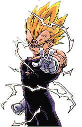

|
 Saiyans |
|
Description: A brutal, primitive race, the Saiya-jins were a race of bandits on Planet Plant. Their long-time rivals, the Tsufuru-jin, managed to keep the physically strong race in check with their technology. However, the Saiya-jins took over the planet when Plant had its first full moon in a long time. The planet was renamed Vegeta, and the Saiya-jins adopted Tsufuru-jin machines for themselves. Ignorance brought the downfall of their race when they refused to heed Bardock's warning about Frieza. Their home world was smashed to bits, and only a handful of Saiya-jins survived. All members of their race (even half-bloods) possess the ability to become Oozaru, though few reach the level of Super Saiyan. Energy Attacks: Energy Ball Energy Sphere Kamehameha Dragonfist FinalFlash Galic Gun Skills: Regenerate Powerups: SSJ1 SSJ2 SSJ3 SSJ4 USSJ Kaioken Oozaru |